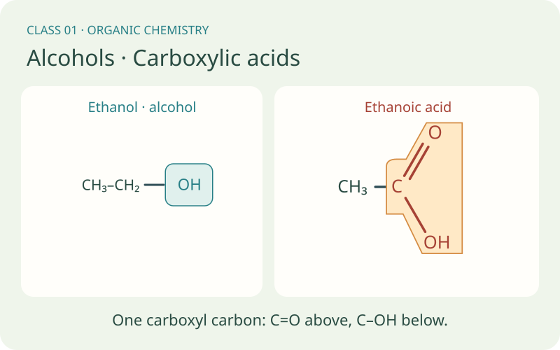
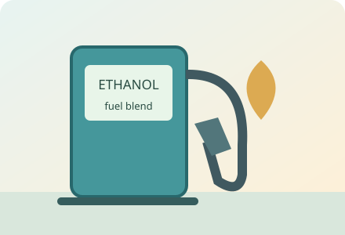
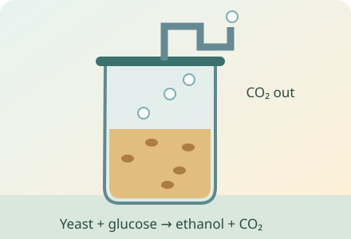
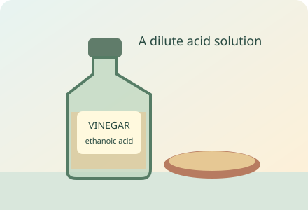
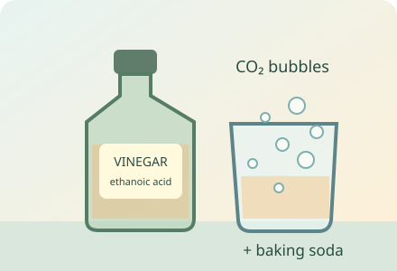

Discover why two molecules containing O–H can behave differently. Read their structures, compare ethanol with ethanoic acid and connect the chemistry to fuels and vinegar.
10 illustrated chaptersNaming, step by step60 exclusive revision questions

By the end of this class, you should be able to…
Read a structural formula and recognise an alcohol or carboxylic acid.
Name simple alcohols and carboxylic acids, using carbon counts and OH position numbers.
Explain ethanol production and its conversion to ethanoic acid.
Predict a carboxylic acid’s reactions with a base or carbonate.
YOUR FIRST GUIDE TO THESE ORGANIC GROUPS
Read it like a book. Build the idea, page by page.
Start at Chapter 1 if this is new. Read the explanation, study the picture and work through the example. All ten chapters remain readable without JavaScript.
Teal: alcohol –OHCoral: complete acid –COOHDark: the attached carbon chain. Colour is a reading aid, not the physical colour of an atom.
CHAPTER 01 / 10
Learn the language of a molecular drawing
Start with the smallest pieces of the drawing. An atom is a unit of a chemical element. An element contains one kind of atom, identified by a chemical symbol: C is carbon, H is hydrogen and O is oxygen. A molecule is a group of atoms bonded together. Ethanol is a molecule containing all three of these elements.
A covalent bond is a shared pair of electrons. Electrons are negatively charged particles in atoms. One line, – , represents one shared pair; two lines, = , represent a double bond with two shared pairs. In the ordinary neutral molecules shown here, carbon forms four bonds, oxygen two and hydrogen one. A double bond counts as two when checking this total.
A subscript is a small number written after a symbol. In CH₃, the ₃ counts three hydrogen atoms attached to that carbon. In CH₃–CH₂–OH, count each group separately: one carbon plus one carbon, three H plus two H plus the H on oxygen, and one O. The molecule therefore has two carbons, six hydrogens and one oxygen.
A molecular formula, such as C₂H₆O, gives the total atom counts. A structural formula also shows connections. CH₃–CH₂–OH is a condensed structural formula: the groups save space, while the lines show how they join. When you see C(=O), the brackets indicate an oxygen double-bonded to that carbon; they do not mean that a separate oxygen molecule is floating nearby.
Remember and explain whyA subscript counts atoms. A line shows a bond. Connections tell you more than totals alone.
Pause and think · Does C₂H₅OH contain five or six hydrogen atoms?
Six. C₂H₅ counts five in the carbon-containing part; the final OH supplies another H.
CHAPTER 02 / 10
Meet the alcohol family
A functional group is an arrangement of atoms that gives a molecule characteristic chemical reactions. In the simple alcohols here, the group is a bonded –OH attached to a saturated carbon: a carbon connected through single bonds. This –OH is called a hydroxyl group. It is not the free hydroxide ion OH⁻ found in sodium hydroxide.
Look at ethanol, CH₃–CH₂–OH. The oxygen is bonded to a carbon and a hydrogen. Methanol, CH₃–OH, has one carbon. Ethanol has two, and propan-1-ol, CH₃–CH₂–CH₂–OH, has three. Their different carbon chains share the same alcohol group. The name ending –ol is a useful clue, but the structure is the evidence.
The O–H group helps small alcohol molecules interact with water. Hydrogen bonding is an attraction involving H attached to an O atom and a neighbouring O atom’s electrons. Ethanol and water mix. As the carbon chain becomes longer, the carbon-containing part generally makes these alcohols less soluble in water: soluble means able to dissolve. The hydroxyl group has not disappeared.
In the usual dilute-water classroom comparison, ethanol is approximately neutral. It does not behave like sodium hydroxide simply because both formulas contain O and H. Later, we will meet another group that contains O–H but behaves as an acid. Always read the neighbours of the group.
Remember and explain whyFor these simple alcohols: –ol in the name, –OH on a saturated carbon in the structure.
Pause and think · Does making the carbon chain longer automatically remove the alcohol group?
No. If the appropriate –OH remains, the molecule still belongs to the alcohol family.
CHAPTER 03 / 10
Name an alcohol, step by step
A systematic name describes the structure. For the unbranched alcohols in this book, first choose the carbon chain containing the –OH-bearing carbon. Count its carbons: one gives meth-, two eth-, three prop- and four but-. These prefixes are not numbers of hydrogen atoms.
Number the chain from the end that gives the –OH-bearing carbon the lowest position number. This position is a locant. Use the alcohol ending –ol. In longer simple names the position is placed before ol: propan-1-ol or propan-2-ol. A hyphen separates the number from the word parts. Methanol and ethanol need no position number because there is only one distinct position for OH on those chains.
CH₃–CH₂–CH₂–OH is propan-1-ol: start numbering at the end nearest OH, so the OH carbon is carbon 1. CH₃–CH(OH)–CH₃ is propan-2-ol: the OH is on the middle carbon, carbon 2. Brackets in CH(OH) show that the OH group is attached to that CH carbon. The two structures have the same total formula C₃H₈O but different connections; they are structural isomers.
For CH₃–CH₂–CH₂–CH₂–OH, choose four carbons and give OH position 1: butan-1-ol. Check the name by rebuilding the formula: four carbons with OH on carbon 1. At this introductory stage we use straight chains and one alcohol group. Branched chains and more than one OH require additional naming rules, introduced when you study those structures.
Choose the lowest OH position: propan-1-ol and propan-2-ol are different structures.
Remember and explain whyCount C → number nearest OH → use –ol. The locant identifies the OH-bearing carbon.
Pause and think · What is the name of CH₃–CH(OH)–CH₃?
Propan-2-ol: three carbons, with OH attached to the middle carbon.
CHAPTER 04 / 10
Use and make ethanol: everyday chemistry
A solvent is a substance that dissolves another substance. Ethanol is used as a solvent in formulated products, and it can be part of a fuel blend. These uses depend on its properties; “alcohol” is a chemical family name, not a claim that every alcohol is suitable for drinking. Methanol, for example, is poisonous.
Fermentation is a biological process in which yeast enzymes convert glucose into ethanol and carbon dioxide under oxygen-poor conditions. Yeast is a microorganism, and an enzyme is a biological catalyst. A catalyst speeds a reaction without being consumed overall. The simplified equation is C₆H₁₂O₆ → 2C₂H₅OH + 2CO₂.
The large numbers in front of formulas are coefficients. They give relative numbers of molecules. The 2 before CO₂ means two complete carbon dioxide molecules, not a new molecule called C₂O₄. Count six carbons, twelve hydrogens and six oxygens on each side of the fermentation equation.
Industry can also make ethanol by reacting ethene with water under suitable catalyst, temperature and pressure conditions: C₂H₄ + H₂O ⇌ C₂H₅OH. Ethene is a hydrocarbon with a C=C bond; adding the elements of water across it can form an alcohol. The ⇌ symbol means that the reaction can proceed in both directions. Fermentation and industrial hydration are different routes to the same ethanol molecule.

Ethanol as a fuel component
The same ethanol molecule can be part of a fuel blend or act as a solvent. Family names describe chemistry, not suitability for drinking.

Yeast makes ethanol and carbon dioxide
In the simplified oxygen-poor fermentation model, glucose is rearranged into ethanol and CO₂. The gas can leave the fermenter.

Vinegar contains dilute ethanoic acid
Vinegar is a solution in water. “Dilute” describes concentration; “weak” describes the acid’s partial ionisation.

Vinegar and baking soda form a gas
Ethanoic acid reacts with sodium hydrogencarbonate to form sodium ethanoate, water and carbon dioxide.
Remember and explain whyFermentation: glucose → ethanol + carbon dioxide. Coefficients multiply the whole formula.
Pause and think · Which gas explains the bubbles in the simplified fermentation model?
Carbon dioxide, CO₂. Ethanol is the other named product.
CHAPTER 05 / 10
Meet the complete carboxyl group
A carboxylic acid contains a carboxyl group: –C(=O)–OH, shortened to –COOH. Focus on one central carbon. It is double-bonded to one oxygen, single-bonded to an O–H group and single-bonded to the rest of the molecule. The C=O part is called a carbonyl group. Carbon still has four bonds: 2 + 1 + 1.
In the drawings below, the double-bonded O points steeply upwards and the OH points downwards. Both are attached to the same carbon. The branches help you see the complete group; changing how a formula is drawn on the page does not create a different compound. The drawings show connectivity rather than a measurement of bond lengths.
Methanoic acid, H–C(=O)–OH, has one carbon. Ethanoic acid, CH₃–C(=O)–OH, has two. Propanoic acid, CH₃–CH₂–C(=O)–OH, has three. Count the carboxyl carbon in the total. These simple acid names end in –oic acid.
Compare ethanol with ethanoic acid. Ethanol has an alcohol hydroxyl group on a saturated carbon. Ethanoic acid has the complete –COOH arrangement, including C=O. The OH inside a carboxyl group is not enough to classify it as an alcohol. The neighbouring carbonyl changes the chemical behaviour. Vinegar is a dilute aqueous solution containing ethanoic acid; aqueous means dissolved in water.
Methanoic, ethanoic and propanoic acids: C=O rises steeply; OH descends from the same carbon. The carboxyl carbon is included in the carbon count.
Remember and explain whyO double-bonded up + OH single-bonded down, on the SAME carbon: the whole group is –COOH.
Pause and think · Why is CH₃COOH not classified as an alcohol just because OH appears in its formula?
Its O–H is part of the complete carboxyl group on a carbonyl carbon. Read C=O and O–H together.
CHAPTER 06 / 10
Name a carboxylic acid, step by step
For the unbranched molecules with one carboxyl group shown here, choose the carbon chain that includes the carboxyl carbon. Count that carbon as carbon 1. The double-bonded O and the OH are not carbon atoms, so they do not add to the chain’s carbon count.
Use the same carbon-count prefixes: meth- for one carbon, eth- for two, prop- for three and but- for four. The carboxylic-acid ending is –oic acid: methanoic acid, ethanoic acid, propanoic acid and butanoic acid. Keep the word acid in the name. In these simple single-carboxyl examples, a locant for COOH is unnecessary because its carbon is automatically carbon 1.
H–C(=O)–OH is methanoic acid, also written HCOOH. CH₃–C(=O)–OH is ethanoic acid, CH₃COOH. CH₃–CH₂–C(=O)–OH is propanoic acid, CH₃CH₂COOH. CH₃–CH₂–CH₂–C(=O)–OH is butanoic acid. Read the complete connection, with O double-bonded above and OH below, rather than counting only the carbon group written on its left.
Some familiar materials use common names: ethanoic acid is also called acetic acid, and methanoic acid is also called formic acid. These common names do not identify new compounds. In this class, practise the systematic names first. A salt has a different name: sodium ethanoate is not ethanoic acid, because it contains ethanoate ions rather than the unchanged acid molecule.
Number from the carboxyl carbon. Propanoic acid includes three carbons, not two.
Remember and explain whyCount the COOH carbon too. One carboxyl group on these straight chains: –oic acid.
Pause and think · What is the systematic name of CH₃–CH₂–CH₂–COOH?
Butanoic acid: four carbons in total, including the carboxyl carbon.
CHAPTER 07 / 10
Why “weak acid” and “dilute acid” mean different things
An acid can donate a proton, H⁺. An ion is an atom or group of atoms with an electrical charge. In water, H⁺ is hydrated: it is associated with water molecules rather than existing as a bare floating proton. School equations often write H⁺ as a convenient shorthand.
Ethanoic acid is a weak acid because only a proportion of its molecules ionise in water. Ionisation means forming ions. A simplified equation is CH₃COOH ⇌ CH₃COO⁻ + H⁺. The ethanoate ion, CH₃COO⁻, has lost the acidic H, while its negative charge is indicated by the raised minus sign. The reversible arrow shows that both directions are possible.
Concentration describes how much substance is present in a given amount or volume of solution. Dilute means a relatively low concentration. Weak describes how extensively an acid ionises under the stated conditions. Adding water dilutes a solution; it does not turn the acid into a different, “strong” acid. Ionisation extent can also depend on concentration, so do not treat a weak acid as having one fixed percentage ionised in every solution.
pH is a measure of acidity. For water at about 25 °C, pH 7 is neutral, lower values indicate acidity and higher values indicate basicity. The pH of a particular acid solution depends on concentration as well as acid behaviour; the word weak does not give a single pH value.
Remember and explain whyWeak = partial ionisation. Dilute = low concentration. Never swap the two meanings.
Pause and think · Does “ethanoic acid is weak” mean that it contains no hydrogen?
No. It contains hydrogen; “weak” describes partial ionisation in water, not absence of hydrogen.
CHAPTER 08 / 10
Predict the reactions of a carboxylic acid
A base reacts with an acid; in the proton model, it can accept H⁺. Neutralisation of ethanoic acid with sodium hydroxide forms a salt and water: CH₃COOH + NaOH → CH₃COONa + H₂O. A salt is an ionic compound made from positive and negative ions. Here the salt is sodium ethanoate, with sodium and ethanoate ions.
Neutralisation names the reaction, not a promise that every mixture will finish at pH 7. The final solution depends on what was mixed and in what amounts. The familiar H⁺ + OH⁻ → H₂O equation shows proton and hydroxide reacting to form water; it is not a claim that ethanol supplies free OH⁻.
A carbonate or hydrogencarbonate can react with an acid to release carbon dioxide. Sodium hydrogencarbonate, NaHCO₃, is commonly called baking soda. For this example: CH₃COOH + NaHCO₃ → CH₃COONa + H₂O + CO₂. The products are a salt, water and carbon dioxide.
Effervescence means visible gas bubbles forming. It is different from boiling. Bubbles alone do not identify a gas; carbon dioxide turns limewater milky in its standard test. In this ordinary comparison, ethanol does not show the same acid–carbonate effervescence as ethanoic acid. The two molecules contain O–H but their full groups behave differently.
Remember and explain whyAcid + carbonate/hydrogencarbonate → salt + water + carbon dioxide.
Pause and think · Vinegar and baking soda bubble at room temperature. Does that mean the liquid is boiling?
No. The reaction produces carbon dioxide gas; effervescence is not the same process as boiling.
CHAPTER 09 / 10
Connect ethanol to ethanoic acid
Ethanol can be oxidised to ethanoic acid under suitable conditions. For this primary alcohol conversion, oxidation can be described as gaining oxygen and/or losing hydrogen. In ethanol, the –OH-bearing carbon is attached to one other carbon; this is a primary alcohol. Do not assume every alcohol gives the same acid.
The simplified overall equation is CH₃CH₂OH + O₂ → CH₃COOH + H₂O. Follow the two-carbon skeleton: it stays two carbons long while the alcohol end becomes a carboxyl group. In vinegar production, microorganisms help use oxygen during the conversion of ethanol into ethanoic acid.
Keep fermentation and this oxidation separate. Fermentation converts glucose into ethanol and carbon dioxide under oxygen-poor conditions. The vinegar conversion uses oxygen and produces ethanoic acid from ethanol. A reversible arrow in another reaction does not mean these two different processes have identical conditions.
The next class connects alcohols and carboxylic acids in another way: under suitable acid-catalysed conditions they can form an ester and water. An ester is a different functional-group family, studied in the Esters and polyesters class. First become confident distinguishing the alcohol and acid structures here.
Oxidation of ethanol can produce the ethanoic acid present in vinegar.
Remember and explain whyFermentation makes ethanol; oxidation of ethanol can make ethanoic acid.
Pause and think · Which organic product is formed in the simplified oxidation of ethanol used here?
Ethanoic acid, CH₃COOH. Its complete –COOH group replaces the alcohol end of the two-carbon skeleton.
CHAPTER 10 / 10
Compare, predict and explain before you investigate
Use the structure first. An alcohol in this lesson has –OH attached to a saturated carbon. A carboxylic acid has –C(=O)–OH. Both contain oxygen and hydrogen; the connections, not the presence of those letters alone, distinguish them.
Use evidence second. Ethanoic acid is weak in water and reacts with a suitable base or carbonate. Ethanol is approximately neutral in the ordinary aqueous comparison and does not give the same acid–carbonate effervescence. Do not predict an exact pH or a reaction rate from a family name alone.
On the practical work mat, choose ethanol and move its structural formula into position. Select the functional group and inspect its behaviour, then record the observation. Repeat with ethanoic acid and compare the two. Use Help with this step for a demonstration of one action. This is a molecular group model, not a measurement of reaction speed.
The practice questions and Molecule Mission game below use ideas you have just studied. In the game, identify the whole functional group, sort the molecule, then explain why. The everyday-life rounds ask about fermentation, vinegar, carbon dioxide and the difference between weak and dilute. If unsure, return to the matching book chapter before trying again.
Compare the alcohol –OH with the complete carboxyl group, –COOH. Drawings show connections; they are not scaled molecular photographs.
Remember and explain whyStructure → family → prediction → evidence → explanation.
Pause and think · What is the first thing to check when both candidate formulas contain OH?
Read the full connection around OH, especially whether C=O is attached to the same carbon.
This is a structural model. Drag the selected formula onto the work mat, click its characteristic functional group and use the magnifier. Record ethanol and ethanoic acid and compare their behaviour. You can also select an object and its destination, or use the keyboard; Help with this step demonstrates one action.
11
Choose an investigation
Make a prediction, choose the conditions and use the apparatus on the bench. Drag equipment into place, turn switches and watch the reaction. Need a hand? Use Help with this step. Record your evidence before answering the explanation question.
Switch investigations here. Your progress and notebook stay available while this page is open.
Preparing your experiment…
VIRTUAL LAB
YOUR BENCH
Choose conditions Sample, quantities and equipment
Use the equipment directly on the bench. Drag, click or tap the highlighted apparatus.
YOUR EVIDENCE
Record and compare your observations.
Observations from the current experiment
Your notebook stays while you explore this page. Reloading clears it. Practical notes and lesson checks are not sent to the teacher.
12
Use the evidence
13 · CHECK THE IDEAS YOU JUST LEARNED
Practise this class.
Every question uses an idea explained above. Try it, read the feedback and return to a worked example if needed. These short practice checks and the practical notebook stay on this page; they are separate from recorded Test yourself sessions.
0 of 6 questions correctly explained.
14 · APPLY THE IDEAS IN A GAME
Molecule Mission: sort, name and explain.
How to play
Read the structure. For molecule rounds, click the whole functional group, then drag the molecule to Alcohol or Carboxylic acid. You can also select the card and choose a tray.
Explain or name it. Choose the matching explanation. Naming rounds use the carbon-count and position rules taught in the book.
Connect the chemistry. Solve everyday-life rounds using fermentation, vinegar and acid reactions. Check your reasoning, read the feedback and retry.
3 stars on a first try, 2 on a second, 1 after more tries or with a hint. Revealed solutions earn 0. No timer. Practice and tricky-round retries are not recorded; choose Play for my teacher for a recorded new game when Google recording is confirmed.
Learn the vocabulary, follow the reasoning and compare a model solution before trying the revision simulator or question games.
SECTION-EXCLUSIVE REVISION
Ready to test your understanding?
Choose from 60 questions only on alcohols and carboxylic acids: structures, naming, uses, strength, concentration and reactions. Read the section preparation notes when you need a reminder. Practise with explanations or select Test yourself for a recorded quiz when the updated Google bank is confirmed.